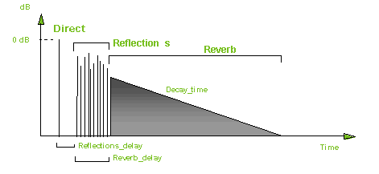
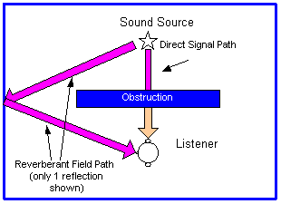
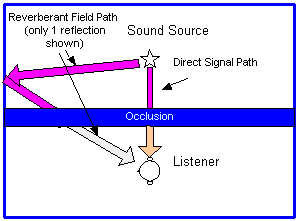

The environment plays a role in how a listener perceives sounds in a three-dimensional space. For example, footsteps in a long, narrow hallway should probably sound a bit different than footsteps in a big ballroom, because of the differences in the reflected sounds that are reaching the listener indirectly. You would also expect the sound to be a bit muffled if it were coming from the other side of a wall or around a corner.
The Interactive 3-D Audio Rendering Guidelines Level 2.0 (I3DL2) specifies that the original signal be split into two components: the direct path signal and the reverberant field signal. The direct path signal represents the direct, non-reflected signal path from the sound source to the listener. The reverberant field signal represents the sum total of early and late reflections from the sound source to the listener. Each component is separately low-pass filtered, which simulates the effects of objects between the source and the listener (in the case of occlusion) or objects between the reverberant field and the listener (in the case of obstruction).
The direct path signal is then sent out to the HRTF processor, while the reverberant field signal is sent to the I3DL2 reverb send, since the I3DL2 reverberation is handled by the global processor.
The following diagram illustrates the reverberation response model.

For more details on obstruction and occlusion, see the following sections:
Obstruction is the muffling (attenuation and filtering) of sound by an object between the listener and the source, contained within a common environment (like a room). The sound can reach the listener via diffraction around the object and/or via transmission through the object.
The following diagram is a simplified example of a sound that has an object obstructing the path between the source and the listener.

Depending on the object obstructing the path between the source and the listener, the sound direct signal path that is transmitted through the source could be fairly clear (if the object is highly transmissive, like a curtain) or negligible (if the object is very solid, like brick wall).
The reflected sound from the source is unaffected by the object (since the source radiates in the listener's environment), so it only depends on the position of the source and listener relative to the obstacle.
Occlusion is the muffling of sound by a partition or wall separating two environments. Sounds that are in a different room or environment can reach the listener's environment by transmission through the partition or by traveling through any openings between the source's and the listener's environments.
The following diagram is a simplified example of a sound that has a partition separating the source's and the listener's environments.

Sounds that reach the listener's environment have been affected by the transmission or diffraction effects caused by the partition, so both the direct-path sound from a source and the reflected sound in the listener's environment are muffled.